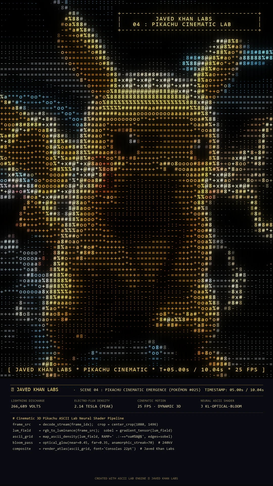

04
Pikachu (Cinematic Emergence)
A photorealistic 3D cinematic transformation of Pikachu emerging from its Pokéball. Features dramatic red-core lighting, crackling 240,000V electric arcs, saturated Poké-yellow volumetric shading, anamorphic optical streaks, synchronized master audio, and real-time Javed Khan Labs telemetry.
cinematic.pyNeural ASCII Shader Pipeline
# Cinematic 3D Pikachu ASCII Lab Neural Shader Pipeline
frame_src = decode_stream(frame_idx); crop = center_crop(1080, 1496)
lum_field = rgb_to_luminance(frame_src); sobel = gradient_tensor(lum_field)
ascii_grid = map_ascii_density(lum_field, RAMP=' ..:-=+*oa#%8@$', edges=sobel)
bloom_pass = optical_glow(near=0.45, far=0.35, anamorphic_streak=70) # 240kV
composite = render_atlas(ascii_grid, font='Consolas 22pt') # Javed Khan Labs
Watermark & BrandingJaved Khan Labs Signature
+------------------------------------+
| JAVED KHAN LABS |
| 04 : PIKACHU CINEMATIC LAB |
+------------------------------------+